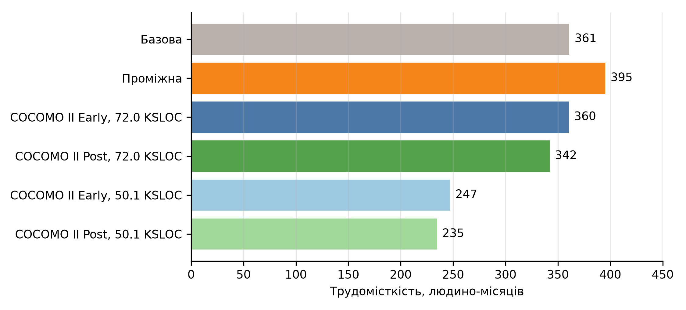
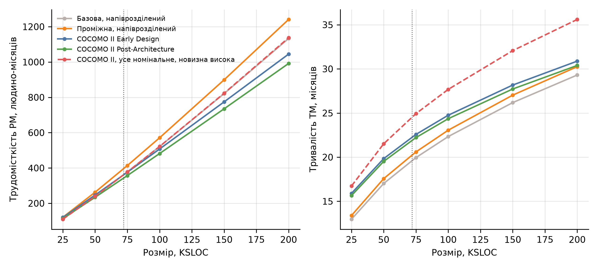

КПІ ім. Ігоря Сікорського · Практична робота № 6
Базова, проміжна моделі і COCOMO II для Shopizer
Виконав: Соколов Олександр, студент групи ІП-33
Дисципліна «Економіка IT-індустрії та підприємництво»
| Тип проєкту | PM | TM | Розробників | Вартість, $ |
|---|---|---|---|---|
| Органічний | 214.0 | 19.2 | 11.1 | 535 121 |
| Напіврозділений | 360.9 | 19.6 | 18.4 | 902 364 |
| Вбудований | 609.8 | 19.5 | 31.3 | 1 524 605 |
PM = a · SIZEb, TM = c · PMd; для Shopizer обрано напіврозділений тип, як у ПР2 [2]
PM = a · SIZEb · EAF
EAF = 1.15 · 1.15 · 0.91 · 0.91 = 1.095
RELY, CPLX, MODP, TOOL відхиляються від номіналу, ще 11 номінальні. Напіврозділений тип на 9.5% більше за базову
| Тип проєкту | PM | TM |
|---|---|---|
| Органічний | 312.6 | 22.2 |
| Напіврозділений | 395.3 | 20.3 |
| Вбудований | 519.5 | 18.5 |
PM = 2.94 · SIZEE · ΠEM
E = 0.91 + 0.01 · ΣSF
TM = 3.67 · PMNSF
F = 0.28 + 0.2 · (E − 0.91); тут E = 1.0419, F = 0.3064 [3]
| Фактор | Рівень | Значення |
|---|---|---|
| PREC | високий | 2.48 |
| FLEX | дуже високий | 1.01 |
| RESL | високий | 2.83 |
| TEAM | високий | 2.19 |
| PMAT | номінальний | 4.68 |
| ΣSF | 13.19 |
| Множник | Рівень | Значення |
|---|---|---|
| RCPX | високий | 1.33 |
| RUSE | високий | 1.07 |
| PERS, PDIF, PREX, FCIL, SCED | номінальні | 1.00 |
| EM | 1.423 |
PM = 2.94 · 50.1331.0419 · 1.423 = 247.1
TM = 3.67 · 247.10.3064 = 19.9
| Множник | Рівень | Значення |
|---|---|---|
| RELY | високий | 1.10 |
| CPLX | високий | 1.17 |
| RUSE | високий | 1.07 |
| TOOL | високий | 0.90 |
| SITE | низький | 1.09 |
| Ще 12 множників | номінальні | 1.00 |
| EM | 1.351 |
PM = 2.94 · 50.1331.0419 · 1.351 = 234.6
TM = 3.67 · 234.60.3064 = 19.5
12 множників номінальні: немає вимог понад норму або даних про команду

Трудомісткість Shopizer за моделями, людино-місяців

PM і TM для розмірів від 25 до 200 KSLOC
| Модель | PM | TM |
|---|---|---|
| Базова, напіврозділений | 360.9 | 19.6 |
| Базова, вбудований | 609.8 | 19.5 |
| Проміжна, напіврозділений | 360.9 | 19.6 |
| Проміжна, вбудований | 474.3 | 18.0 |
| COCOMO II Early Design | 360.6 | 24.6 |
| COCOMO II Post-Architecture | 360.6 | 24.6 |
SIZE = 72.016, усі множники номінальні, PREC дуже низький (6.20): ΣSF = 21.45, E = 1.1245. Early і Post збігаються, бо множники рівні 1
Повний список – у звіті